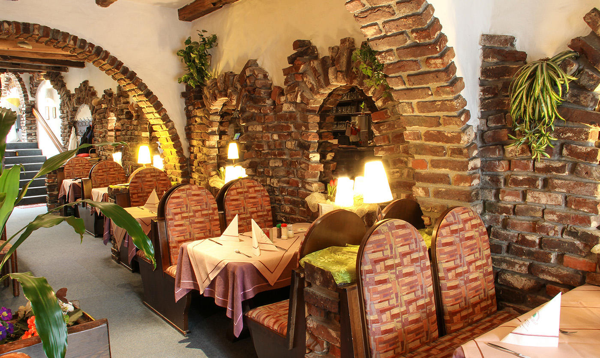

Historiamme
Restaurant Drita on perheyritys, joka perustettiin jotta Balkanin kulttuuri olisi lähempänä meidän perhettäämme. Ravintolan perusti omistajan isovanhemmat, jotka karkasivat levottomuutta omassa kotimaassa ja löysivät turvaa Suomessa. Alunperin Restaurant Drita tarjosi vain Kosovo-Albanialaista ruokaa, sillä aluksi isovanhemmat halusivat tuoda vain omaa kulttuuria lähemmäs itseä ja tarjota myös muille Kosovosta tulleille turvapaikanhakijoille muistoa omasta maasta. Ravintolan suosion lisääntyessä, päätimme kehittää valikoimaamme suuremmaksi ja lisäsimme kaikkien Balkanin maiden kulttuurit mukaan.
Meille tärkeintä on asiakkaiden erinomainen vastaanotto ja tarjoilu, sillä haluamme, että kaikki tietävät miten luotettavia, ystävällisiä ja ahkeria Balkanin alueelta kotoisin olevat ihmiset ovat.
Tervetuloa kokeilemaan!
